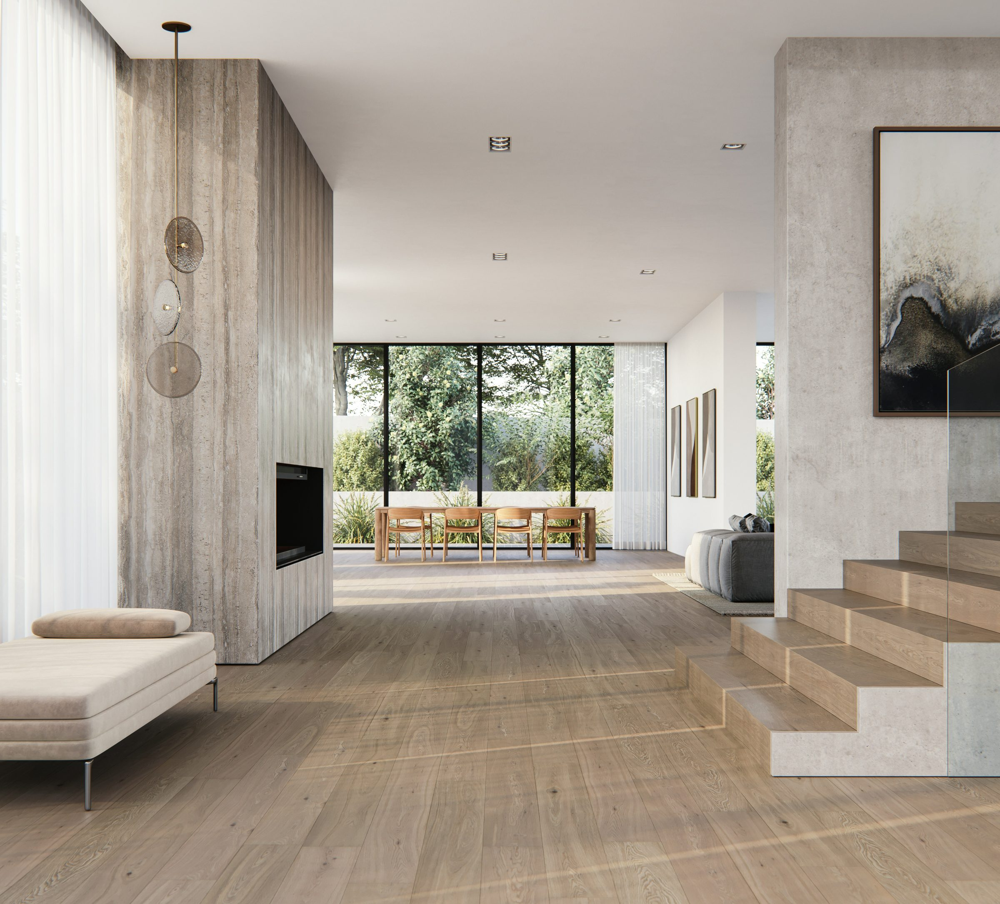
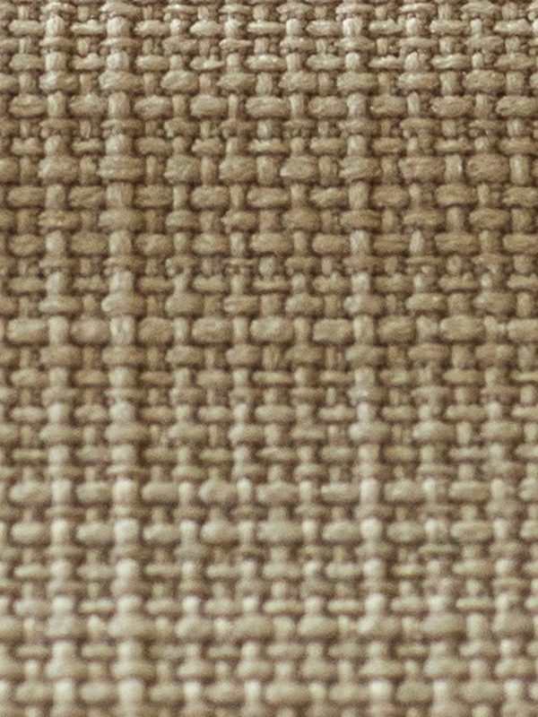
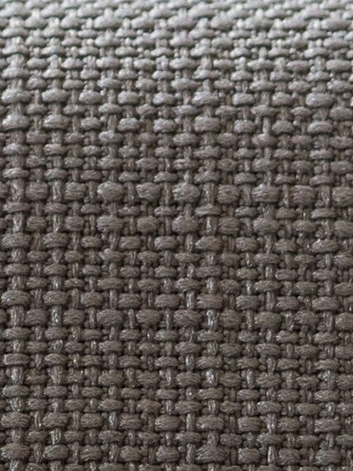
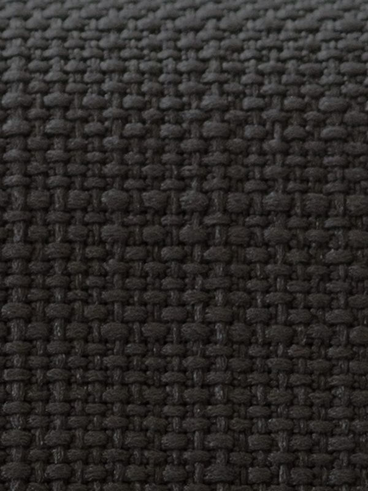
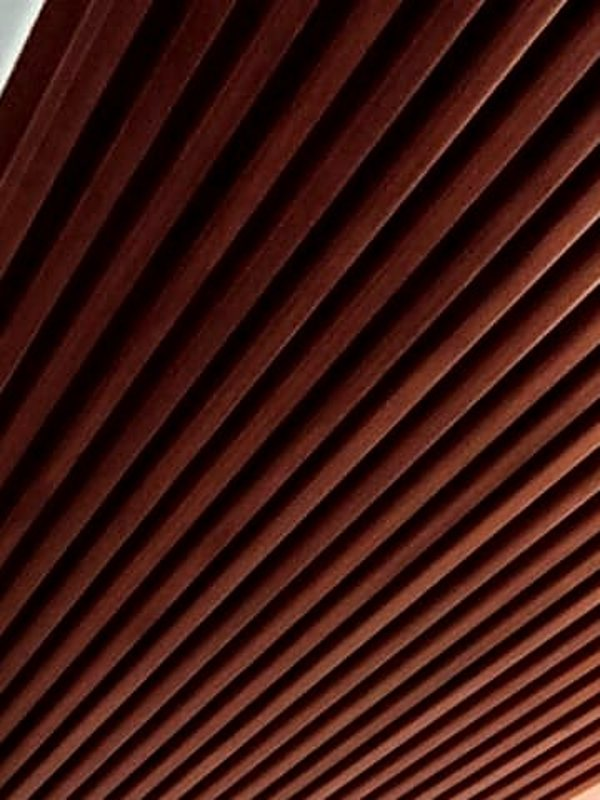
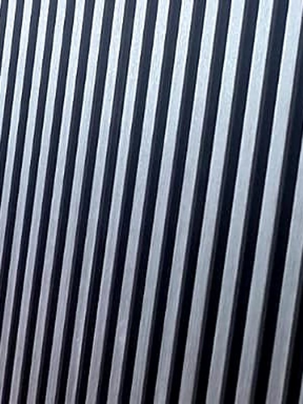
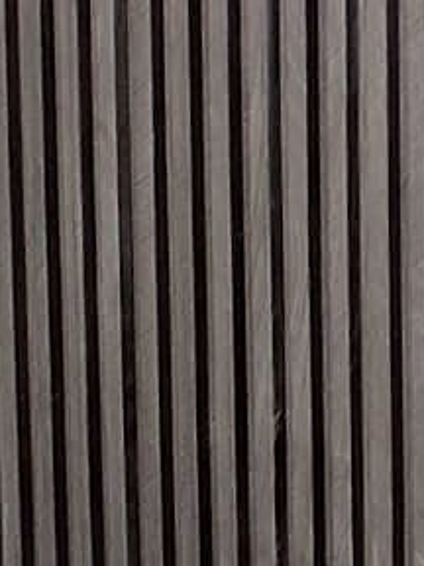

Cortinas y persianas, lambrín, follaje, toldos y pérgolas para residencias en Puebla. Medimos, proponemos e instalamos con el mismo cuidado de principio a fin.
Interior y exterior
Una casa se termina en sus detalles. En cómo entra la luz de la tarde, en la textura de un muro, en la sombra fresca de la terraza. Ahí trabajamos nosotros.
I · Cortinas y persianas
Cada pieza se confecciona sobre las medidas exactas de su ventana. Elegimos con usted la tela, la caída y el sistema de cada espacio.
Textiles y acabados que se eligen en su casa, con el muestrario en la mano y la luz real de cada cuarto.

Lino arena
Screen piedra
Blackout carbón
Lambrín nogal
Lambrín grafito
Lambrín humoII · Lambrín
Lambrín de PVC para interior y exterior. Muros, plafones, cabeceras y divisores que cambian un espacio en días, sin obra pesada.
III · Follaje
Muros verdes y follaje artificial de aspecto natural. Sin riego, sin poda y verde todo el año, para salas, recepciones y terrazas.
IV · Toldos
Toldos de tela y lona, del balcón de su casa a la terraza de un restaurante. Medimos, fabricamos a la medida e instalamos.
V · Pérgolas
Pérgolas de herrería con techo de vidrio. La terraza se vuelve una habitación más: con luz, protegida de la lluvia y con un diseño propio.
¿Tiene una terraza, un patio o una fachada en mente?
Cotizar exteriorUsted trata con una sola persona, de la primera visita a la última pieza instalada.
Para proyecto
Para arquitectos, interioristas y desarrolladores: condiciones de proyecto y precio por volumen.
Hablar de un proyecto